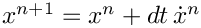

Goal
The primary goal of Example 1: Utilize Thyra is to replace the raw arrays used in Example 0: Basic Problem with Thyra vectors, while preserving the same van der Pol problem, the same hand-written Forward Euler stepping logic, the same simple tabular solution output, and the same regression-testing workflow.
New concepts introduced from Teuchos and Thyra are:
- Teuchos::RCP
- Teuchos::RCP is Trilinos' reference-counted smart pointer and plays a role similar to
std::shared_ptr
- Teuchos::RCP is Trilinos' reference-counted smart pointer and plays a role similar to
- Thyra::VectorBase
- replaces raw C++ arrays as the abstract vector representation
- Thyra::VectorSpaceBase
- defines the vector space for the state
Thyra::DetachedVectorViewandThyra::ConstDetachedVectorView- provide direct element access to Thyra vectors
Thyra::V_VpStV,Thyra::V_V,Thyra::norm, andThyra::norm_2- provide abstract vector algebra operations
This transition is the first step toward expressing the application in terms of abstract numerical interfaces rather than concrete array storage. That abstraction is what later allows Tempus steppers, model evaluators, and solver infrastructure to work with the application state.
What stays the same
- The van der Pol equations are unchanged.
- The timestepper is still Forward Euler.
- The application still controls the time loop directly.
- The output table still reports the step index, time,


- The regression check follows the same role and uses the same gold values.


Selected code excerpts
The code excerpts below highlight the main changes needed to move from raw arrays to Thyra vectors.
Memory allocation
Setup Thyra vectors. The raw double arrays are replaced by Thyra vectors, which are created from a Thyra::VectorSpaceBase. This step also introduces Teuchos::RCP for memory management.
Before
After
The state is now represented through abstract vector interfaces rather than fixed-size arrays.
Assign initial conditions
Initialize Thyra vectors. Initial values are assigned through Thyra::DetachedVectorView. The local scope ensures the detached views are destroyed immediately after use.
Before
After
Evaluate the right-hand side
Evaluate the right-hand side. The van der Pol right-hand side is still evaluated directly in the application code, but element access now goes through detached vector views.
Before
After
Element-wise access is still possible, but it now uses Thyra utilities.
Perform Forward Euler
Use Thyra vector algebra. The Forward Euler update is expressed with Thyra::V_VpStV, which performs the vector operation
Before
After
Promote to the next time step
Use Thyra vector assignment. The accepted solution is copied into the current state using Thyra::V_V.
Before
After
How to compare the examples
A more detailed comparison can be viewed by diffing:
From the packages/tempus directory, a focused comparison of the main time-integration logic between these two examples can be generated locally in bash or zsh with:
This ignores leading header lines (e.g., #include statements and Doxygen comments) and trailing regression-testing lines.